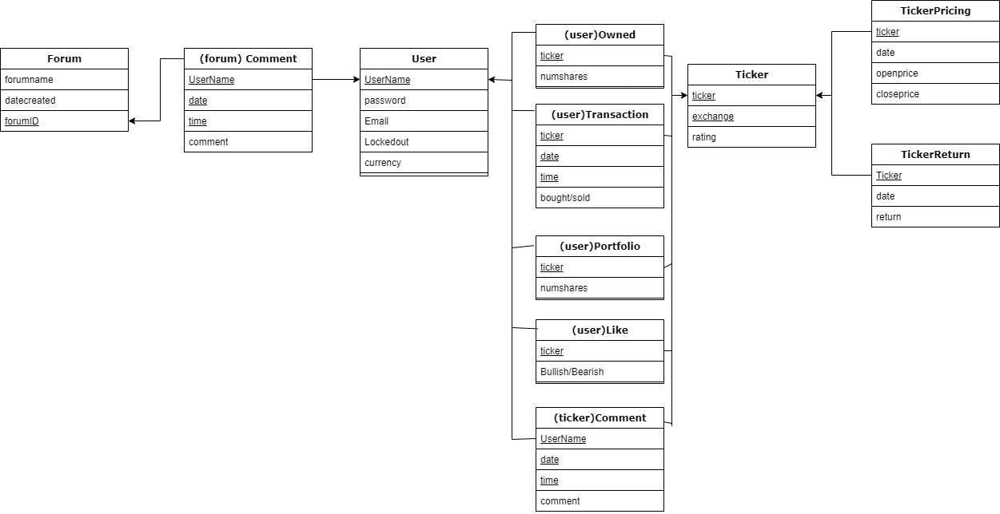

STOCK PROJECT
1. Clients can login to our system with a username and password, which are both encrypted in the database. The login form has a checkbox option to “Remember me today.” If this option is checked upon a successful login, the website will remember them for a 24-hour period (without requiring login if they leave and return to the site later). If not checked, the site will only remember them for a 1-hour period.
2. To provide added security, we will block out an account after 5 unsuccessful login attempts, after which the user must reset their password by following a link that is emailed to the address stored in the database for the given username.
3. Clients are able to purchase imaginary stocks with a set of credits given to them when they make their account, stocks will be “bought and sold” by the website to give the users a sense of imaginary trading (essentially paper trading) the website will list the top 10 traders accounts
4. Clients will be able to set up a set of their own stocks aside from the paper trading game to reflect actual portfolios, these will not have a credit cap
5. Clients can visualize stock performance reflected over variable time periods
6. Various quantitative indicators will be available for overlay on a stock visualization
7. Clients can use “Bull-ish” and “Bear-ish” buttons to rate their views of a tickers performance
8. Separate forum section for users to discuss stocks and things, will have a profanity filter as well as a feature to report comments
9. Block chain mining, funding the accounts of the creators
10.Live chat functionality???

Skyler, Andrew, Brian, Connor